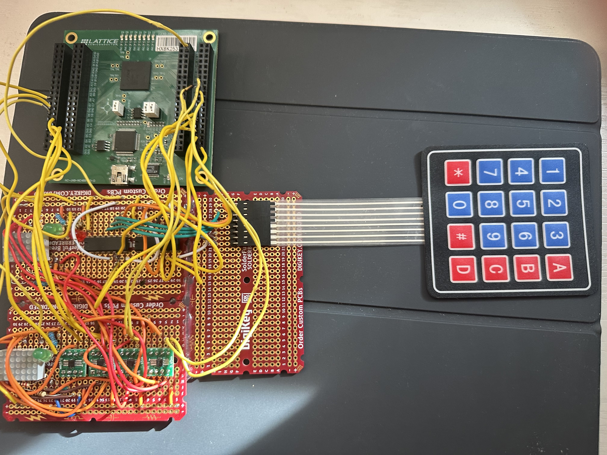

The System-on-Chip Architecture
Developed as part of the SoCet (System-on-Chip Extension Technologies) team, this project involved architecting a complete hardware-level simulation of the game Battleship.
Instead of running on a processor, the game state, hit-detection logic, and user input validation were synthesized directly into the logic gates of a Lattice iCE40 FPGA using SystemVerilog. The architecture features multiple clock domains to multiplex dual 8x8 LED matrices without visual flicker.
KiCAD Schematic and Routing
Once the digital logic was validated, the project transitioned into physical hardware design. I utilized KiCAD to engineer the schematics required to support the FPGA and the external peripherals.
The PCB was meticulously routed across 4 layers to ensure signal integrity across the high-speed data lines between the FPGA and the dual LED dot-matrix displays. Careful attention was paid to power planes and decoupling capacitors to filter out switching noise.
Manufacturing and Bring-Up
The final phase involved physical assembly and hardware bring-up. The boards were manufactured and populated using SMT/THT soldering techniques.
As seen in the hardware photos, the bring-up process required extensive debugging with logic analyzers and oscilloscopes to verify the timing constraints between the keypad inputs and the FPGA's clock domains. This project solidified my ability to own the entire hardware lifecycle: from the first line of Verilog code to the final soldered pin.